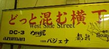
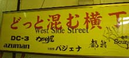
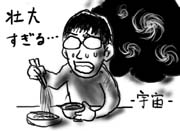

大宮をぶらぶら歩いたのですが，東口前の飲み屋街がこんなことになっていたなんて，まったく気付いてませんでした．
いろんな意味で今さらすぎる．
大宮をぶらぶら歩いたのですが，東口前の飲み屋街がこんなことになっていたなんて，まったく気付いてませんでした．
いろんな意味で今さらすぎる．
前回に引き続き，今日もまた寝坊をしてしまいました．しかも目覚めた時刻は，コアタイム開始後という最悪ぶり．速攻で会社に連絡を入れます．
午後から出社すると，部内のスケジュールボードに，"ミズグチ 10:30 今起きました -午前半休"と書かれていました．どんどん立場がなくなっていきます．
昨日の夜の話ですが，実家で両親がTVをつけていたため，NHK大河ドラマ『武蔵』を初めて見ることになりました．
という感じで時系列がさっぱり把握できません．カットアップ・メソッド？バロウズですか？
ぼんやり見ていると不安に襲われるのですが，世のお父さん達はあれで平気なのでしょうか？セリフ回しもやたらと大仰で，ちょっとアドベンチャーゲームっぽいかも知れません．
昼過ぎに関東に戻って来たので，まさしろさんと会って，うどん国みやげを渡しつつ，彼行きつけのラーメン屋「梅もと」へ．遅めの昼食を採る事にしました．
ここのつけ麺は，中盛り，大盛りの後，麺が増えるごとに，地球盛り→銀河盛り→宇宙盛り→ビッグバン盛り，と宇宙の神秘に近付いて行きます．ビッグバン盛りの後は，クォーク盛りとレプトン盛り，および４つの力盛りから別の宇宙が再構成されていくに違いありません．あまりに壮大すぎるので，僕は無難に中盛りにしておきました．ゴマの風味の薄味タレがなかなか美味しかったです．
そういえば今回の帰省ではうどんを食べてないや，と帰りの電車で思い当たりました(遅い)．空港でいいから食べてくればよかった(昼飯とキャラがかぶります)．
今日は葬儀でした．
喪服は持って帰っていたのですが，セットになっていた靴下があまりに薄くて寒かったため，適当に黒い靴下を借りたところ，プレイボーイのロゴ(ウサギの横顔)入りでした．葬式にプレイボーイ．いいのかなぁ．
葬儀は午後からなのですが，朝早くから隣近所の人達がいろいろと手伝ってくれます．田舎ではプライベートを受け渡す代わりに互助を得ることができるのです．近所の人達から一通り「まだ結婚せんのか？」「彼女はおるんか？」と聞かれます．こればっかりは曖昧な笑みで逃げるしかない．田舎のコミュニケーションでは，あいまいな返事は相当使えます．
手伝いに来てくれた人の中に幼なじみの父親(E.YAZAWA似)がいたのですが，父親同士も幼なじみだったらしいです．これは今回初めて知りました．お昼の仕出し弁当を食べながら，二人は昔の思い出話に花を咲かせています．E.YAZAWAが言います．「昔は今みたいにTVゲームなんてなかったから，家帰ってかばん置いたら暗くなるまでずっと外で遊んでたなぁ．今の子見てたらTVゲームとかばっかりで本当信じられんわ」．…えーと．近所で一番最初にファミコン導入したの，お前ん家じゃねぇか！というツッコミはもちろん心の中だけで．もっとも僕の幼なじみは，中学に入った頃から急速にヤンキー化していったので超光速で疎遠になりました．人のクラスタリングは意外とすみやかです．
葬儀で思わず涙ぐんだりしながら，ばたばたと初七日まで終了．ぐったり疲れた(主に正座疲れで)ので夜は早々に寝ました．ほとんど寝ずに3日間動きっぱなしだった両親が多少心配なのですが，明日には岩槻に戻らなければいけません．たまにこういう事があると，実家を遠く離れて一人暮らししていることについて考えさせられてしまいます．
考えたところで何も答えは出ないのですが．
実家に戻ってきました．今日は通夜です．
もう動かない祖母と面会を果たしましたが，思い出を口にすると涙がこぼれそうで何も言えませんでした．もろいもんです．
実家の方の風習では，通夜に湯灌を済ませた後，ぬかと塩で手を洗い，豆腐を食べることになっています．ぬかと塩はお清めというのはなんとなく分かるのですが，豆腐はちょっと難しいです．
そうして翌日葬儀が始まるまで，線香とろうそくを絶やさぬように棺と祭壇の前で番をしながら，おりんをチーンチーンと鳴らし続けなければならないのです．葬儀屋が組み立てて行った祭壇には，りんごやみかんなどの果物の他に，ロールケーキとマドレーヌが祭られています．なんでマドレーヌ．
しかし，夜中3時に正座で，ろうそくと線香を見つめながら，おりんをチーンと鳴らし続けるのは，ある種荒行のようでした．意識が朦朧としてきます．普通は線香とろうそくは長時間保つようなものを使うらしいのですが，今回その手のものはなくて，線香は30分で燃え尽きるし，ろうそくも1時間40分しか保ちません．昔は夜更かししていて，よく祖母に「はよ寝まい(寝なさい)」と怒られたものなのですが，今日は婆ちゃんのために夜更かしをするよ，
あ〜(チーン)
祖母が亡くなりました．享年94歳．大往生．夜更けに静かに息を引き取ったそうです．
年齢が年齢なので，ある程度予感はあったのです．だから，悲しいという気持ちはほとんどないのですが，寂しさや切なさというものは，どうしても胸に去来しますね．
祖母は産婆として多くの子を取り上げ，戦後の人口増加に寄与した人で，呼ばれればどんな夜中でも自転車を駆って飛び出して行ったと聞きます．僕が小さな頃は，祖母が夜道で遭遇した様々な怪異(「すねこすり」に類するものなど)や障害(増水で今にも落ちそうな橋を自転車で疾走など)の話を聞かせてもらったものです．祖母は大層信心深い人で，あらゆる怪異や障害を般若心経一発で乗り越えて行く様が子供心に大雑把で楽しかった覚えがあります．
それも，もう聞くことはできないのだなぁと，そんな事をぼんやりと考えたのでした．余談ですが，祖母はほとんどの怪異を「狸がばかしたもの」と思っていたようです．さすが狸王国の四国なだけはありますね(*1)．でも狸にお経って効くのかしらん．
明日からしばらく実家へ戻ります．
(*1) 四国では，狐は弘法大師によって放逐されたことになっており，狐に化かされた話は極端に少ない．逆に狸に化かされた話は非常に多く，一つ目小僧なんかのメジャな妖怪も狸が化けたものとして処理されているケースが多い．